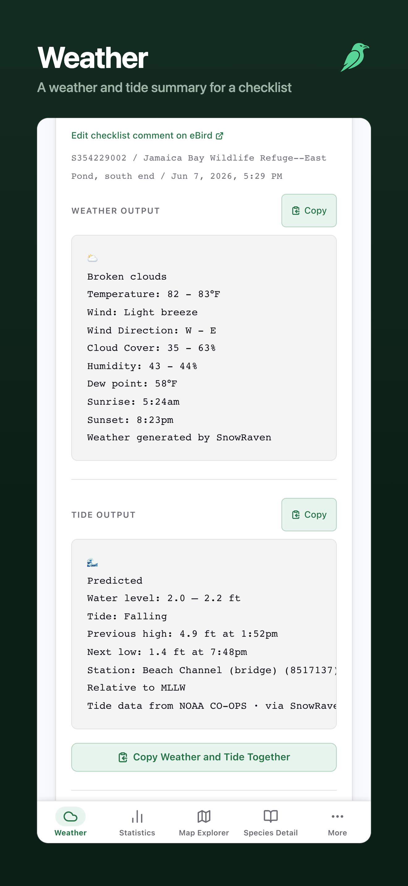
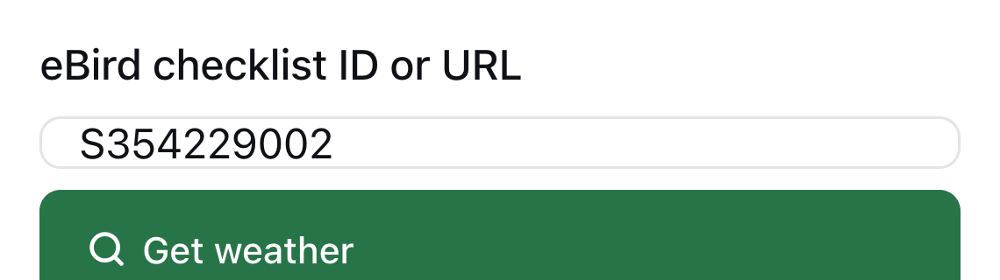

App Store screenshots: the composed sets
The final frames, read straight from appstore/screenshots/: three sets in upload order, each on a light and a dark store page. Tap any frame to see it large. Nothing here has been uploaded; App Store Connect is written only after your yes.
One decision for you, on the iPhone Weather frame. The recapture at the page top (as approved) shows the checklist field, and that field draws only 20px tall at phone widths of 480 and under, in Chromium and in WebKit, the engine the iPhone app runs on. It is how the app ships today, not a capture fault, and it is out of this change's scope (no app code changes here). The committed frame avoided it by opening mid-page, at the cost of two tide lines running off the right edge. Both are shown below; the set currently uses the page-top frame.
iPhone 6.9-inch 1320 x 2868
The six committed captures, with Weather recaptured at the page top.
Read from the files: 6 frames, every one 1320 x 2868 px, 3 channels (RGB), no frame has an alpha channel. Recomposed for this page: byte-identical to the committed frames.
Search result · light
Search result · dark
Product page · light · all six, upload order
Product page · dark · all six, upload order
Large · Map Explorer (tap any frame above)
iPhone Duo, inner display 2007 x 2853
These are the real Duo captures at 669 by 951 points (2007 x 2853 at 3x), taken for this set. They fill the viewport edge to edge in the app's icon-rail layout: no letterboxing, no empty side bands, demo data only.
Read from the files: 6 frames, every one 2007 x 2853 px, 3 channels (RGB), no frame has an alpha channel. Recomposed for this page: byte-identical to the committed frames.
Search result · light
Search result · dark
Product page · light · all six, upload order
Product page · dark · all six, upload order
Large · Map Explorer (tap any frame above)
iPad 13-inch 2064 x 2752
The six committed captures, unchanged. Species Detail is the approved Wood Thrush frame.
Read from the files: 6 frames, every one 2064 x 2752 px, 3 channels (RGB), no frame has an alpha channel. Recomposed for this page: byte-identical to the committed frames.
Search result · light
Search result · dark
Product page · light · all six, upload order
Product page · dark · all six, upload order
Large · Map Explorer (tap any frame above)
The iPhone Weather frame: page top or committed
Left is in the set now: the page top, the whole weather block in frame and the tide block opening at the bottom edge. Right is the committed capture composed the same way: it opens mid-page with no tab header, and the Station: and Tide data from lines run off the right edge. Either composes with the same caption.


The checklist field, full resolution

Captions, in upload order
The display line is the tab's name exactly as the app spells it; the second line is new store copy. Widths are the rendered text against its box, in output pixels, measured by the composer in the renderer (tab name, then second line). Captions are set in .SF NS, the system SF Pro.
| # | Raw capture | Display line | Second line | Chars | iPhone 6.9-inch px used / box | iPad 13-inch px used / box | iPhone Duo, inner display px used / box |
|---|---|---|---|---|---|---|---|
| 1 | 01-map-explorer.png | Map Explorer | Your sightings and nearby hotspots on a map | 43 | 549 / 936 862 / 1080 | 595 / 1528 938 / 1680 | 687 / 1459 976 / 1623 |
| 2 | 02-statistics.png | Statistics | Life list totals, growth, and milestones | 40 | 393 / 936 712 / 1080 | 426 / 1528 775 / 1680 | 492 / 1459 806 / 1623 |
| 3 | 04-calendar.png | Calendar | Each day shaded by species, checklists, media, etc. | 51 | 382 / 936 978 / 1080 | 414 / 1528 1065 / 1680 | 477 / 1459 1108 / 1623 |
| 4 | 05-species-detail.png | Species Detail | Your whole history with one bird | 32 | 594 / 936 610 / 1080 | 644 / 1528 664 / 1680 | 743 / 1459 691 / 1623 |
| 5 | 03-weather-tide.png | Weather | A weather and tide summary for a checklist | 42 | 358 / 936 825 / 1080 | 388 / 1528 898 / 1680 | 447 / 1459 934 / 1623 |
| 6 | 06-breeding-codes.png | Breeding Codes | Breeding evidence by species and code | 37 | 669 / 936 759 / 1080 | 725 / 1528 826 / 1680 | 837 / 1459 859 / 1623 |
The held Screenshots section for appstore/LISTING.md
Verbatim. It goes between Keywords and Categories once you approve it; the patch is pipeline/app-store-listing-polish/listing-screenshots.patch.
## Screenshots Three sets, one per App Store Connect slot, each in this order. All three use the same six frames and captions: | # | Raw capture | Display line | Second line | |---|---|---|---| | 1 | `01-map-explorer.png` | Map Explorer | Your sightings and nearby hotspots on a map | | 2 | `02-statistics.png` | Statistics | Life list totals, growth, and milestones | | 3 | `04-calendar.png` | Calendar | Each day shaded by species, checklists, media, etc. | | 4 | `05-species-detail.png` | Species Detail | Your whole history with one bird | | 5 | `03-weather-tide.png` | Weather | A weather and tide summary for a checklist | | 6 | `06-breeding-codes.png` | Breeding Codes | Breeding evidence by species and code | Each frame is the committed capture on SnowRaven's dark green band with the raven mark, the tab's name and one line saying what it shows; composed by `website/tools/compose-appstore.mjs` from `appstore/screenshots/raw/`. The display line is the tab's name exactly as the app spells it. The order leads with three different shapes (a map, a dashboard, a year grid), the frames a search result shows first. | Set | Slot | Size | Folder | |---|---|---|---| | iPhone | iPhone 6.9-inch | 1320 x 2868 | `appstore/screenshots/iphone-6.9/` | | iPad | iPad 13-inch | 2064 x 2752 | `appstore/screenshots/ipad-13/` | | iPhone Duo | iPhone Duo, inner display, portrait | 2007 x 2853 | `appstore/screenshots/iphone-duo/` | The iPhone Duo set shows the inner display, where the app draws its icon rail, so each frame shows more of its tab than the 6.9-inch set does. The Statistics frames standardize on the keyed, checked state (an eBird key saved and the escapee check complete): the iPad and iPhone Duo frames show its "Exotic status checked" line, and the iPhone frame ends above it. Store facts, verified 2026-10-30: one set per slot, 1 to 10 images, PNG with no transparency. Apple scales the 6.9-inch set for smaller iPhones. Nothing is scaled into the iPhone Duo slot, which takes either the inner display (2007 x 2853) or the outer (1398 x 2034); a submitted Duo set shows the "Made for iPhone Duo" badge for an app built with the iOS 27.1 SDK or later, and the set is required from April 2027. A set is replaced whole and in order, because a re-upload appends, and read back by checksum.
The website/tools changes
The capture script's Duo row, the raw output folder, the SHOT filter and the page-top Weather framing, plus the README paragraphs. Everything under website/ is published with the site. The composer itself is new: website/tools/compose-appstore.mjs and its test compose-appstore.test.mjs.
diff --git a/website/tools/README.md b/website/tools/README.md
index 93e9cb27..385e9f02 100644
--- a/website/tools/README.md
+++ b/website/tools/README.md
@@ -90,11 +90,12 @@ npx playwright install chromium webkit # webkit is for verify/, below
was defending a different line entirely, the old tab strip's ~1,457px collapse
into a dropdown; that threshold no longer exists.)
- The App Store captures inherit the same rule and land on both sides of it by
- design: the iPhone viewport (440px) gets the bottom bar, and the iPad one
+ The App Store captures inherit the same rule and land on all three densities
+ by design: the iPhone viewport (440px) gets the bottom bar, the iPad one
(1032px) gets the sidebar on every tab except the Map Explorer, where the map's
- own sidebar puts it into the rail. `selectTab` reads a control's `aria-label`
- when it has no visible text, which is what makes it work in the rail.
+ own sidebar puts it into the rail, and the iPhone Duo's (669px) gets the rail
+ on every tab. `selectTab` reads a control's `aria-label` when it has no
+ visible text, which is what makes it work in the rail.
The Statistics escapee pass is answered from the demo dataset itself (a shared
stub in `capture-lib.mjs`, also used by the App Store capture). The demo's
@@ -133,24 +134,32 @@ sets from the same demo-data-backed instance — steps 1 and 2 above are
identical, then:
```
-BASE=http://localhost:1620 node capture-appstore.mjs # -> ../../appstore/screenshots/{iphone-6.9,ipad-13}/*.png
+BASE=http://localhost:1620 node capture-appstore.mjs # -> ../../appstore/screenshots/raw/{iphone-6.9,ipad-13,iphone-duo}/*.png
```
-- Six shots per device family, in the listing order (Map Explorer with the
- Jamaica Bay popup open, Statistics, Weather & Tide, Calendar, Species
- Detail, Breeding Codes), light theme.
+- Six shots per device family (Map Explorer with the Jamaica Bay popup open,
+ Statistics, Weather & Tide, Calendar, Species Detail, Breeding Codes), light
+ theme. The upload order is the composer's, below.
- Sizes: iPhone 6.9-inch `1320x2868` (viewport 440x956 at scale 3) and iPad
13-inch `2064x2752` (viewport 1032x1376 at scale 2) — the one required size
per family App Store Connect accepts and scales down (re-verify the
accepted-size list at submission time; the constants and their reasoning
live at the top of `capture-appstore.mjs`).
+- The iPhone Duo has a slot of its own that nothing is scaled into. The set is
+ its inner screen upright, `2007x2853` (viewport 669x951 at scale 3), which
+ draws the icon rail, so it takes the same per-shot steps as the iPad.
+- `FAMILY=iphone|ipad|duo` and `SHOT=<file name prefix>` limit a run to the
+ frames being replaced. Never recapture the whole iPad family: its
+ `05-species-detail.png` shows a bird this script cannot select (DECISIONS.md,
+ v1.0.52).
- Output is PNG (what ASC accepts); `process-img.mjs` is not part of this
path. Every image is dimension-verified after capture and any failed shot
fails the run.
-- The PNGs are **committed** under `appstore/screenshots/` (unlike this
+- The PNGs are **committed** under `appstore/screenshots/raw/` (unlike this
directory's git-ignored `shots/`), so the listing set is reviewable and
regenerable. Re-run when the photographed UI changes, review every image by
- eye (demo-data names only), and commit the new set.
+ eye (demo-data names only), compose (below), and commit the raws and the
+ frames together.
- The weather shot performs a live lookup (real public coastal checklist via
`CHECKLIST`). Unlike `capture.mjs` it does **not** strip the attribution
lines, but as of v1.0.4 it does **unwrap their anchor markup**:
@@ -163,6 +172,25 @@ BASE=http://localhost:1620 node capture-appstore.mjs # -> ../../appstore/scree
still strips those lines outright for the website shot, which is why the two
scripts differ here.
+#### Composing the upload frames
+
+The raw captures are not uploaded as they are. `compose-appstore.mjs` frames
+each one as a rounded card on the website's dark green band, under the tab's
+name, one line saying what the frame shows, and the raven mark, and writes the
+upload sets one folder above `raw/`, keeping the file names:
+
+```
+node compose-appstore.mjs # -> ../../appstore/screenshots/{iphone-6.9,ipad-13,iphone-duo}/*.png
+```
+
+Its `FRAMES` table holds the captions and the upload order, which is published
+copy recorded in `appstore/LISTING.md`. It renders in Playwright Chromium in
+the system font and needs no backend. It writes nothing for a family when a raw
+is missing or the wrong size, a caption is wider than its box, the set falls
+outside 1 to 10 frames, or a frame comes out at the wrong size or with
+transparency; `compose-appstore.test.mjs` holds the committed frames to the
+same rules. Re-run it after any recapture.
+
The reviewer demo dataset hosted at `../demo/` (see `appstore/REVIEW_NOTES.md`)
is the same generator's output: after changing `gen-demo-data.mjs`, re-run it
and copy `demo-data/ebird-backup.csv` and `demo-data/ml-export.csv` over
diff --git a/website/tools/capture-appstore.mjs b/website/tools/capture-appstore.mjs
index d80990ea..4c3ac687 100644
--- a/website/tools/capture-appstore.mjs
+++ b/website/tools/capture-appstore.mjs
@@ -6,7 +6,12 @@
// BASE app origin (default http://localhost:1620)
// CHECKLIST a real PUBLIC coastal eBird checklist id for the live weather+tide
// shot (so a tide shows). Override via env if the default has aged out.
-// FAMILY optional: capture only "iphone" or "ipad" (default: both)
+// FAMILY optional: capture only "iphone", "ipad" or "duo" (default: all three)
+// SHOT optional: capture only the shot whose file name starts with this
+// (e.g. SHOT=03 for 03-weather-tide.png). A recapture touches only
+// the frames it names: the iPad 05-species-detail.png on disk is
+// not reproducible by this script (DECISIONS.md, v1.0.52). A SHOT
+// that names no shot fails the run rather than capturing nothing.
// WEATHER_REPLAY=1 capture the weather shot from the app's own offline-replay
// path instead of a live OpenWeather call. For rigs whose
// backend/.env deliberately carries no real OpenWeather key (this
@@ -15,9 +20,11 @@
// to a live success (the offline cue sits above the framed region).
// With a real key in .env, omit this and the shot is fully live.
//
-// Output: ../../appstore/screenshots/{iphone-6.9,ipad-13}/*.png — committed.
-// PNG is the deliverable format (App Store Connect accepts PNG/JPEG), so
-// process-img.mjs (WebP, website-only) is NOT part of this path.
+// Output: ../../appstore/screenshots/raw/{iphone-6.9,ipad-13,iphone-duo}/*.png,
+// committed. These are the RAW captures; compose-appstore.mjs frames them into
+// the upload sets one folder up. PNG is the deliverable format (App Store
+// Connect accepts PNG/JPEG), so process-img.mjs (WebP, website-only) is NOT
+// part of this path.
//
// Device dimensions (portrait). Re-verified against App Store Connect's
// accepted-size list on 2026-08-25: as of 2025+ ASC requires only ONE size per
@@ -26,6 +33,11 @@
// smaller devices from it. The viewport math is exact:
// iPhone 6.9" 1320 x 2868 = viewport 440 x 956 @ deviceScaleFactor 3
// iPad 13" 2064 x 2752 = viewport 1032 x 1376 @ deviceScaleFactor 2
+// iPhone Duo 2007 x 2853 = viewport 669 x 951 @ deviceScaleFactor 3
+// The iPhone Duo has its own App Store Connect slot (inner display 2007x2853 or
+// outer 1398x2034, nothing scaled into it; verified 2026-10-30). This is the
+// inner screen upright (DECISIONS.md, v1.0.59), which at 669pt draws the icon
+// rail, so it takes the non-phone branches below (phone: false).
// If Apple moves the accepted list, adjust these constants (and re-verify the
// note in appstore/LISTING.md's record).
//
@@ -73,18 +85,21 @@ import { GL, makePage, selectTab, buildProvenanceStub, installProvenanceRoutes,
const BASE = process.env.BASE || 'http://localhost:1620';
const CHECKLIST = process.env.CHECKLIST || 'S354229002'; // coastal -> shows tide
const ONLY = process.env.FAMILY || '';
+const ONLY_SHOT = process.env.SHOT || '';
const WEATHER_REPLAY = process.env.WEATHER_REPLAY === '1';
const FAMILIES = [
{ key: 'iphone', dir: 'iphone-6.9', vp: { width: 440, height: 956 }, dsf: 3, px: { w: 1320, h: 2868 }, phone: true },
{ key: 'ipad', dir: 'ipad-13', vp: { width: 1032, height: 1376 }, dsf: 2, px: { w: 2064, h: 2752 }, phone: false },
+ { key: 'duo', dir: 'iphone-duo', vp: { width: 669, height: 951 }, dsf: 3, px: { w: 2007, h: 2853 }, phone: false },
].filter(f => !ONLY || f.key === ONLY);
+if (!FAMILIES.length) throw new Error(`FAMILY=${ONLY} names no family (iphone, ipad, duo)`);
// The one location whose popup opens in shot 1. Must exist in the demo dataset
// (gen-demo-data.mjs LOCS) — QA-05: every visible name comes from the demo data.
const POPUP_LOCATION = 'Jamaica Bay Wildlife Refuge';
-const OUT_ROOT = new URL('../../appstore/screenshots/', import.meta.url).pathname;
+const OUT_ROOT = new URL('../../appstore/screenshots/raw/', import.meta.url).pathname;
const log = (...a) => console.log(...a);
// The demo-dataset guard now lives in capture-lib.mjs, so capture.mjs gets it
@@ -218,11 +233,16 @@ function statsRoutes(ctx) {
})();
}
-// 3 · Weather & Tide — the founding lookup on a real PUBLIC coastal checklist,
-// scrolled so the formatted weather block, the tide, and the copy actions fill
-// the frame. The attribution lines are NOT trimmed (unlike the website
-// capture): an App Store screenshot shows the app's real output, untouched.
-async function shotWeather(p) {
+// 3 · Weather & Tide: the founding lookup on a real PUBLIC coastal checklist.
+// The phone frame is taken at the PAGE TOP (app-store-listing-polish): the
+// lockup, the tab header, the checklist field, the whole weather block, and the
+// tide block opening at the bottom edge. Scrolled to the checklist's own header
+// instead, as it was until then, it opened mid-page with no tab header and two
+// tide lines running off the right edge at 440pt. The iPad and the Duo inner
+// screen keep that anchor: nothing clips there. The attribution lines are NOT
+// trimmed (unlike the website capture): an App Store screenshot shows the
+// app's real output, untouched.
+async function shotWeather(p, fam) {
await selectTab(p, 'Weather');
await p.waitForTimeout(600);
const inp = await p.$('main input');
@@ -246,12 +266,17 @@ async function shotWeather(p) {
// backlog itself stays below the fold; it computes offline from the backup).
await p.locator('button').filter({ hasText: 'List checklists with no weather blocks' }).first().click().catch(() => {});
await p.waitForTimeout(1200);
- // Frame from the looked-up checklist's own header (the edit link + id/place
- // line) down through the weather block, the tide, and the copy actions.
- await p.evaluate(() => {
- const link = [...document.querySelectorAll('a')].find(a => /Edit checklist comment/i.test(a.textContent || ''));
- if (link) { link.scrollIntoView({ block: 'start' }); window.scrollBy(0, -14); }
- });
+ // Phone: the page top. Otherwise frame from the looked-up checklist's own
+ // header (the edit link + id/place line) down through the weather block, the
+ // tide, and the copy actions.
+ if (fam.phone) {
+ await p.evaluate(() => window.scrollTo(0, 0));
+ } else {
+ await p.evaluate(() => {
+ const link = [...document.querySelectorAll('a')].find(a => /Edit checklist comment/i.test(a.textContent || ''));
+ if (link) { link.scrollIntoView({ block: 'start' }); window.scrollBy(0, -14); }
+ });
+ }
await p.waitForTimeout(500);
}
function weatherRoutes(ctx) {
@@ -325,9 +350,12 @@ const SHOTS = [
['06-breeding-codes.png', shotBreeding, null],
];
+const RUN_SHOTS = SHOTS.filter(([file]) => !ONLY_SHOT || file.startsWith(ONLY_SHOT));
+if (!RUN_SHOTS.length) throw new Error(`SHOT=${ONLY_SHOT} names no shot (${SHOTS.map(([f]) => f).join(', ')})`);
+
for (const fam of FAMILIES) {
mkdirSync(`${OUT_ROOT}${fam.dir}`, { recursive: true });
- for (const [file, run, routes] of SHOTS) await capture(fam, file, run, routes);
+ for (const [file, run, routes] of RUN_SHOTS) await capture(fam, file, run, routes);
}
await browser.close();
diff --git a/website/tools/package.json b/website/tools/package.json
index 3c518ac4..ffd64d87 100644
--- a/website/tools/package.json
+++ b/website/tools/package.json
@@ -4,7 +4,7 @@
"description": "The screenshots on the site (`../assets/shots/*.webp`) are generated from the running SnowRaven app driven against **synthetic demo data — never real eBird data**. The published site must never contain anyone's personal sighting locations, which is the whole point of the demo dataset. Regenerate the shots when the UI changes.",
"main": "index.js",
"scripts": {
- "test": "node --test weather-capture.test.mjs capture-marks.test.mjs",
+ "test": "node --test weather-capture.test.mjs capture-marks.test.mjs compose-appstore.test.mjs",
"verify": "node verify/run.mjs"
},
"keywords": [],
Raw captures
Compared with the committed captures by checksum when this page was built.
| Raw | State |
|---|---|
raw/iphone-6.9/01-map-explorer.png | byte-identical to the committed capture |
raw/iphone-6.9/02-statistics.png | byte-identical to the committed capture |
raw/iphone-6.9/04-calendar.png | byte-identical to the committed capture |
raw/iphone-6.9/05-species-detail.png | byte-identical to the committed capture |
raw/iphone-6.9/03-weather-tide.png | recaptured (page top) |
raw/iphone-6.9/06-breeding-codes.png | byte-identical to the committed capture |
raw/ipad-13/01-map-explorer.png | byte-identical to the committed capture |
raw/ipad-13/02-statistics.png | byte-identical to the committed capture |
raw/ipad-13/04-calendar.png | byte-identical to the committed capture |
raw/ipad-13/05-species-detail.png | byte-identical to the committed capture |
raw/ipad-13/03-weather-tide.png | byte-identical to the committed capture |
raw/ipad-13/06-breeding-codes.png | byte-identical to the committed capture |
raw/iphone-duo/01-map-explorer.png | new capture |
raw/iphone-duo/02-statistics.png | new capture |
raw/iphone-duo/04-calendar.png | new capture |
raw/iphone-duo/05-species-detail.png | new capture |
raw/iphone-duo/03-weather-tide.png | new capture |
raw/iphone-duo/06-breeding-codes.png | new capture |